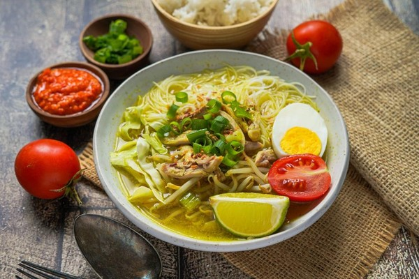

Resep Soto

Bahan Utama:
- 1 ekor ayam, potong menjadi 4 bagian
- 2 liter air
- 2 batang serai
- 3 lembar daun salam
- 4 lembar daun jeruk, sobek-sobek
- 1 ruas lengkuas,
- 2 sendok makan minyak untuk menumumis
Bumbu Halus:
6 siung bawang putih
8 butir bawang merah
3 butir kemiri, sangrai
1 ruas kunyit, bakar
1 ruas jahe
1 sendok teh ketumbar
Garam dan merica secukupnya
Cara Memasak:
- Rebus ayam dengan air hingga mendidih. Ambil buih yang muncul di permukaan agar kuah bening.
- Panaskan minyak, tumis bumbu halus hingga harum. Tambahkan serai, daun salam, daun jeruk, dan lengkuas. Aduk rata.
- Masukkan bumbu tumis ke dalam panci berisi ayam. Masak hingga ayam empuk dan bumbu meresap.
- Angkat ayam dari panci, suwir-suwir dagingnya, lalu sisihkan. Biarkan kuah tetap mendidih untuk mendapatkan rasa yang kaya.
- Tambahkan garam dan merica sesuai selera. Jika ingin rasa lebih kuat, tambahkan kaldu ayam bubuk.
- Tata pelengkap (soun, tauge, ayam suwir, telur rebus) dalam mangkuk. Siram dengan kuah soto panas. Taburi daun bawang, seledri, dan bawang goreng. Beri perasan jeruk nipis, sambal, dan kecap sesuai selera.